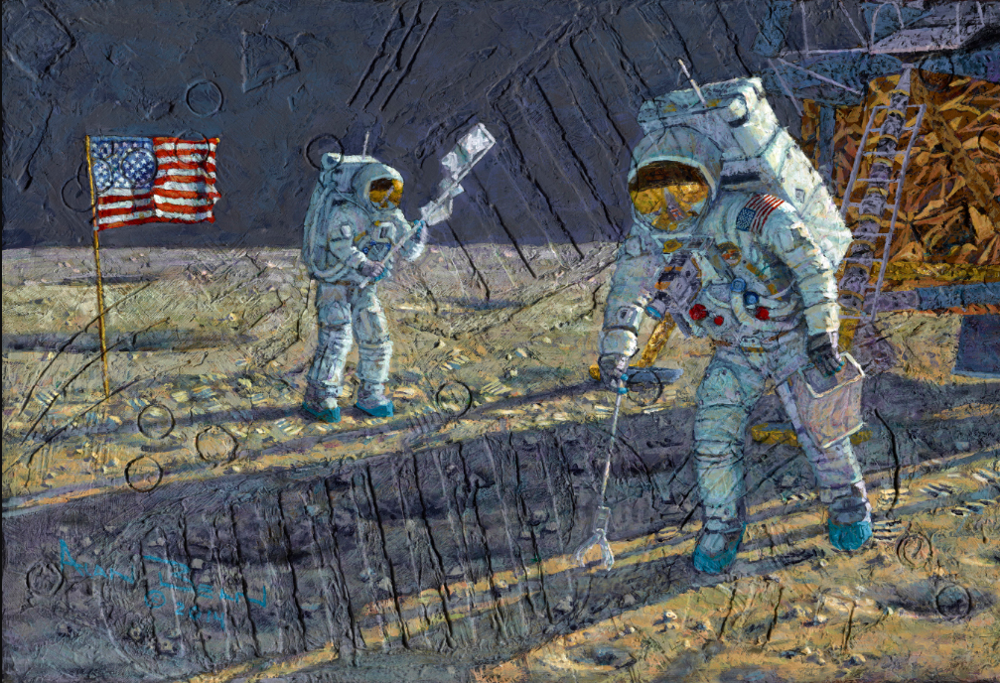
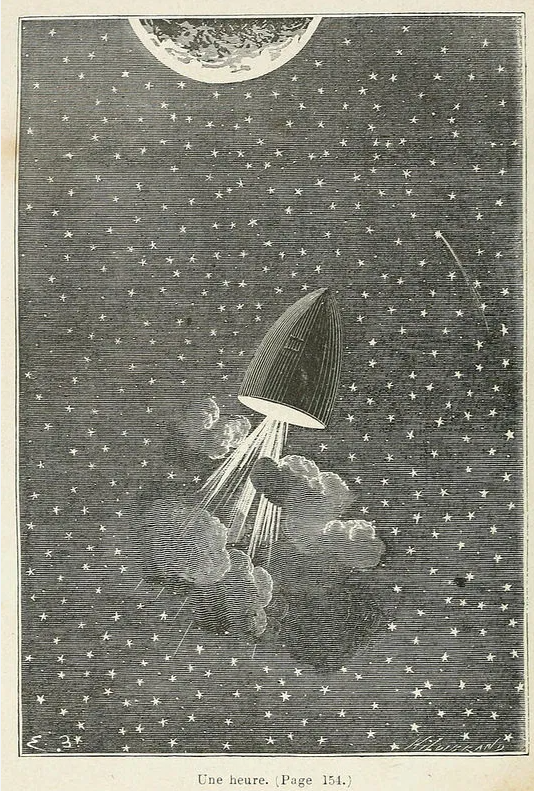
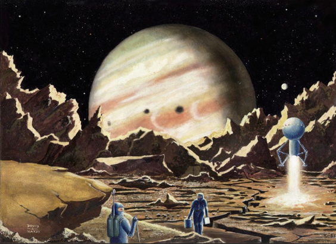

Artist: Alan Bean
Year: 1969–1973
Description: After walking on the Moon, astronaut Alan Bean created textured paintings based on his lunar experience, incorporating Moon dust and mission patches.

An Hour

Cosmic Landscape